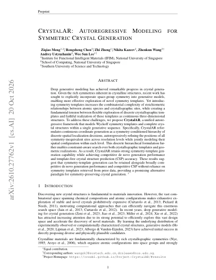

De novo · with pre-relaxation
13.7% stable
CrystalAR has 33M parameters; PLaID++ is a 7B post-trained model.
Table 1 in the paper (opens in a new tab) ↗Given a space group, one model writes one sequence: a Wyckoff template, a lattice, then coordinates refined coarse to fine.

01The problem
A space group and its Wyckoff positions are categorical choices, while the lattice and the atomic coordinates are real numbers that have to respect them.
0 free parameters
1 free parameter
2 free parameters
3 free parameters
02Overview
Given a space group, a single decoder-only Transformer writes the template and active lattice variables in sequence, then jointly refines the free coordinates through nine dyadic levels.
03The method
Each Wyckoff position restricts a site to a point, line, plane or the full cell; fixed sites need no refinement, while all free coordinates are refined jointly through nine dyadic levels.
Write an element and a Wyckoff position for each site.
Generate the active lattice variables for the crystal family.
Refine all free sites jointly across nine dyadic levels.
04One crystal, written in 3D
A real sample from the final model, replayed from its stored generation record.

Space group P63/mcm (No. 193) is given, and its 24 symmetry operations constrain everything that follows.
For each site the model writes an element, then a Wyckoff position: Cl 2b and La 4d are fixed points, La 6g and Bi 6g lie on lines.
A hexagonal cell leaves two variables free, so the model writes V = 562.7 Å3 and c/a = 0.690.
Nine levels each halve the region of every free coordinate, from half the line down to 1/512 of it, about 0.02 Å.
The symmetry operations copy each site across its orbit: 2 + 4 + 6 + 6 = 18 atoms.
The finished cell of La5Bi3Cl, ready to rotate.
Symmetry expansion: 18 atoms in the cell
Space group P6₃/mcm, given. Template: Cl 2b, La 4d, La 6g, Bi 6g. Lattice: V 562.7 ų, c/a 0.690. Coordinates over nine levels: La 6g x: level decisions 0 1 0 0 0 1 0 1 0, final value 0.2705; Bi 6g x: level decisions 1 0 0 1 1 1 0 1 0, final value 0.6143.
Sample denovo:75 from 2,500 de novo samples of the final model. Coordinates are the centers of the level-9 regions; beam statistics come from the stored search record.
05Crystals
Every S.S.U.N. candidate among 2,500 samples of the final model; open one to rotate it, replay how it was written, or download its CIF.


S.U.N. means stable, unique and novel; S.S.U.N. additionally requires a space group other than P1. These 13 structures were judged S.S.U.N. by at least one of three MLIPs (Orb, MACE, UMA), and 3 of them by all three. Energies are signed distances to a fixed MLIP reference hull, in meV/atom. There is no DFT or experimental validation.
06Benchmarks
These numbers come from arXiv v1 and cover de novo generation, symmetry evaluation and crystal structure prediction.
De novo · with pre-relaxation
CrystalAR has 33M parameters; PLaID++ is a 7B post-trained model.
Table 1 in the paper (opens in a new tab) ↗Symmetry · MP-20
0.28% S.S.U.N.
Explore symmetry templates and realize them as complete crystals.
Table 2 in the paper (opens in a new tab) ↗CSP · single hypothesis
25.25% MPTS-52 match rate
Predict structures from composition and a given space group, without retrieving a Wyckoff template.
Table 3 in the paper (opens in a new tab) ↗Values and captions follow arXiv v1; caption descriptions of emphasis and colors refer to the original PDF.
Table 1: De novo crystal generation on LeMat-GenBench under with and without pre-relaxation settings. We evaluate generation quality by validity, uniqueness, and novelty; energetic quality by formation energy Ef, hull energy Ehull, and relaxation RMSD; and material discovery quality by stability, S.U.N., metastability, and M.S.U.N. Symmetry-native models are highlighted in red. CrystalFormer† is evaluated using the 1,000 publicly available generated samples, whereas the other methods use the standard evaluation set. PLaID++ differs from the remaining baselines in that it further applies post-training to improve generation quality. Bold denotes the best result among symmetry-native models, while underline denotes the best result among models without explicit template generation within each setting.
| Model | Method | # Params | Valid (%) ↑ | Unique (%) ↑ | Novel (%) ↑ | Ef (eV) ↓ | Ehull (eV) ↓ | RMSD (Å) ↓ | Stable (%) ↑ | SUN (%) ↑ | Meta (%) ↑ | MSUN (%) ↑ |
|---|---|---|---|---|---|---|---|---|---|---|---|---|
| With pre-relaxation | ||||||||||||
| MatterGen | Diffusion | 47M | 95.7 | 95.1 | 70.5 | −0.70 ± 0.79 | 0.18 ± 0.18 | 0.39 ± 0.50 | 2.0 | 0.2 (6) | 33.4 | 15.0 |
| PLaID++ | LLM+RL | 7B | 96.0 | 77.8 | 24.2 | −0.50 ± 0.44 | 0.09 ± 0.16 | 0.13 ± 0.29 | 12.4 | 1.0 (26) | 60.7 | 7.6 |
| WyFormer | AR+Diff | 8B | 93.4 | 93.0 | 66.4 | −0.43 ± 0.95 | 0.50 ± 0.51 | 0.81 ± 0.98 | 0.5 | 0.1 (3) | 15.7 | 1.9 |
| WyFormer-DFT | AR+Diff | 8B | 95.2 | 95.0 | 66.4 | −0.67 ± 0.91 | 0.27 ± 0.36 | 0.42 ± 0.60 | 3.7 | 0.4 (9) | 24.8 | 7.8 |
| CrystalAR (Ours) | AR | 33M | 91.4 | 89.0 | 39.3 | −0.78 ± 0.87 | 0.15 ± 0.26 | 0.23 ± 0.46 | 13.7 | 0.9 (22) | 42.6 | 7.3 |
| Without pre-relaxation | ||||||||||||
| Crystal-GFN | GFlowNet | 1M | 51.7 | 51.7 | 51.7 | −1.30 ± 2.63 | 2.09 ± 2.38 | 1.87 ± 0.97 | 0.0 | 0.0 (0) | 0.0 | 0.0 |
| ADiT | Diffusion | 180M | 90.6 | 87.8 | 26.0 | −0.73 ± 0.93 | 0.33 ± 0.45 | 0.38 ± 0.40 | 0.4 | 0.0 (0) | 36.5 | 1.0 |
| DiffCSP | Diffusion | 12M | 95.7 | 94.8 | 66.2 | −0.64 ± 0.96 | 0.28 ± 0.56 | 0.59 ± 0.63 | 2.3 | 0.1 (3) | 29.8 | 8.5 |
| DiffCSP++ | Diffusion | 12M | 95.3 | 95.1 | 62.0 | −0.52 ± 0.87 | 0.41 ± 0.44 | 0.69 ± 0.82 | 1.0 | 0.2 (4) | 26.4 | 5.0 |
| LLaMat2-CIF | LLM | 7B | 84.4 | 81.4 | 30.0 | −0.47 ± 1.01 | 0.44 ± 0.71 | 0.54 ± 0.71 | 0.7 | 0.1 (3) | 34.7 | 2.1 |
| LLaMat3-CIF | LLM | 8B | 15.4 | 15.2 | 10.5 | −0.74 ± 2.69 | 1.71 ± 2.48 | 1.01 ± 1.10 | 0.1 | 0.0 (0) | 2.1 | 0.2 |
| CrystalFormer† | AR | 5M | 69.9 | 69.4 | 31.8 | −0.17 ± 1.48 | 0.70 ± 1.33 | 0.66 ± 1.05 | 1.4 | 0.0 (0) | 28.8 | 3.1 |
| SymmCD | Diffusion | 12M | 73.4 | 73.0 | 47.0 | −0.02 ± 1.22 | 0.88 ± 1.07 | 0.87 ± 1.09 | 1.4 | 0.1 (2) | 18.6 | 2.4 |
| CrystalAR (Ours) | AR | 33M | 91.4 | 89.1 | 42.8 | −0.23 ± 1.27 | 0.71 ± 1.08 | 0.77 ± 1.25 | 6.0 | 0.3 (7) | 39.2 | 2.7 |
Table 2: Symmetry evaluation on MP-20 using 2,500 generated structures per method. We group methods into models with and without explicit Wyckoff-template generation, with symmetry-native models highlighted in red. We evaluate template exploration by the number of novel unique templates, distribution fidelity by P1 ratio, SG χ2, WNel, and JSDWyckoff, and material discovery quality by S.U.N. and S.S.U.N. Symmetry statistics are computed over novel templates. Bold and underline denote the best and second-best results, respectively. CrystalAR (SV) denotes the flexible-size variant that explicitly predicts both the number of atoms and the number of symmetry-inequivalent sites.
| Model | Method | Novel unique templates (#) ↑ | P1 (%) · ref = 2.23 | SG χ² ↓ | W_Nel ↓ | JSD_Wyckoff ↓ | S.U.N. (%) ↑ | S.S.U.N. (%) ↑ |
|---|---|---|---|---|---|---|---|---|
| Models without Explicit Template Generation | ||||||||
| DiffCSP | Diffusion | 48 | 70.66 | 23.8303 | 0.3762 | 0.5185 | 0.12 | 0.05 |
| DiffCSP++ | Diffusion | 5 | 2.19 | 0.1049 | 0.4787 | 0.0343 | 0.19 | 0.19 |
| Symmetry-native Models | ||||||||
| WyFormerDiffCSP++ | AR + Diffusion | 190 | 1.56 | 0.2238 | 0.1087 | 0.0248 | 0.13 | 0.13 |
| SGEquiDiff | AR + Diffusion | 386 | 2.02 | 0.2112 | 0.1641 | 0.0218 | 0.11 | 0.11 |
| SymmCD | Diffusion | 215 | 2.38 | 0.1276 | 0.5116 | 0.0290 | 0.09 | 0.09 |
| CrystalFormer | Autoregressive | 89 | 1.26 | 0.3138 | 0.1697 | 0.0399 | 0.00 | 0.00 |
| CrystalAR (SV) | Autoregressive | 268 | 1.94 | 0.2584 | 0.0973 | 0.0323 | 0.19 | 0.19 |
| CrystalAR (Ours) | Autoregressive | 161 | 2.42 | 0.3469 | 0.0611 | 0.0414 | 0.28 | 0.28 |
Table 3: Crystal structure prediction on MP-20 and MPTS-52 under single-hypothesis (1) and multi-hypothesis (20) generation. We evaluate structure recovery by match rate (MR, ↑) and geometric accuracy by RMSE (↓). CrystalAR performs template-free CSP without supplying a retrieved Wyckoff template. Bold denotes the best result in each column, while underline denotes the best single-hypothesis result.
| Model | MP-20 MR (%) ↑ | MP-20 RMSE ↓ | MPTS-52 MR (%) ↑ | MPTS-52 RMSE ↓ |
|---|---|---|---|---|
| Single hypothesis | ||||
| CDVAE (1) | 33.90 | 0.1045 | 5.34 | 0.2106 |
| DiffCSP (1) | 51.49 | 0.0631 | 12.19 | 0.1786 |
| FlowMM (1) | 61.39 | 0.0566 | 17.54 | 0.1726 |
| CrystalFlow (1) | 62.02 | 0.0710 | 21.00 | 0.1613 |
| OMatG (1) | 63.75 | 0.0720 | 25.15 | 0.1931 |
| CrystalAR (1) | 62.92 | 0.0585 | 25.25 | 0.1305 |
| CrystalFormer (1) | 29.62 | 0.0619 | − | − |
| WyFormer (1) | 10.25 | 0.0522 (NA) | − | − |
| 20 hypotheses | ||||
| DiffCSP (20) | 77.93 | 0.0492 | 34.02 | 0.1749 |
| CrystalFlow (20) | 78.34 | 0.0577 | 37.81 | 0.1584 |
| CrystalAR (20) | 74.55 | 0.0655 | 35.71 | 0.1454 |
| CrystalFormer (20) | 64.56 | 0.0835 | − | − |
| WyFormer (20) | 40.90 | 0.0472 (NA) | − | − |
Table 6: Count prior and search ablation for de novo generation. All entries are percentages over 2,500 attempts; S.U.N. counts are shown in parentheses.
| Count policy | Search | Valid (%) | Unique (%) | Novel (%) | Stable (%) | S.U.N. (%) |
|---|---|---|---|---|---|---|
| Empirical prior (CrystalAR) | Sampling | 64.40 | 62.24 | 18.76 | 5.44 | 0.20 (5) |
| Empirical prior (CrystalAR) | SGBS | 91.44 | 89.08 | 42.76 | 6.00 | 0.28 (7) |
| Learned STOP | Sampling | 59.96 | 58.72 | 21.72 | 3.48 | 0.16 (4) |
| Learned STOP | SGBS | 90.12 | 88.64 | 48.92 | 3.52 | 0.16 (4) |
| Composition prefix | SGBS | 91.44 | 89.52 | 41.32 | 5.40 | 0.20 (5) |
Table 7: Representative representation and module ablations. Rates are percentages over 2,500 attempts; S.U.N. counts are shown in parentheses.
| Configuration | Valid (%) | Unique (%) | Novel (%) | Stable (%) | S.U.N. (%) |
|---|---|---|---|---|---|
| Learned STOP reference | 90.12 | 88.64 | 48.92 | 3.52 | 0.16 (4) |
| Full-cell AR | 49.12 | 48.88 | 35.04 | 0.72 | 0.00 (0) |
| Wyckoff-letter coordinates | 89.80 | 88.08 | 51.36 | 4.16 | 0.08 (2) |
| Flat 512-bin coordinates | 68.16 | 66.48 | 29.12 | 4.24 | 0.00 (0) |
| Continuous coordinates | 41.64 | 40.84 | 17.12 | 1.72 | 0.08 (2) |
| No periodic encoding | 89.96 | 88.04 | 50.00 | 4.12 | 0.00 (0) |
| No condition query | 90.52 | 89.08 | 49.72 | 3.72 | 0.12 (3) |
| No template-state bridge | 96.28 | 90.96 | 19.32 | 8.68 | 0.04 (1) |
Table 8: Fixed-skeleton chemistry interventions. All arms use the same generated symmetry skeleton and 2,500 attempts; rates are percentages and S.U.N. counts are shown in parentheses.
| Chemistry intervention | Valid (%) | Unique (%) | Novel (%) | Stable (%) | S.U.N. (%) |
|---|---|---|---|---|---|
| Original elements | 88.36 | 86.00 | 39.68 | 5.92 | 0.28 (7) |
| Element redraw, TE = 1.0 | 87.44 | 85.24 | 41.84 | 5.56 | 0.04 (1) |
| Element redraw, TE = 2.5 | 78.72 | 78.60 | 57.92 | 1.60 | 0.12 (3) |
| TE = 2.5 with uncapped clearance | 78.72 | 78.60 | 58.44 | 0.96 | 0.12 (3) |
Table 9: CSP adaptation with fixed single-hypothesis decoding on MP-20. All configurations use autoregressive template scores and the same coordinate-search settings. Updates denote the adaptation budget, and rank denotes adapter capacity. RMSE is averaged over matched structures.
| Adaptation | Rank | Updates | MR (%) | RMSE |
|---|---|---|---|---|
| Reference | ||||
| Unadapted model | — | 0 | 57.95 | 0.05699 |
| Standard template CE | ||||
| CE adapter | 8 | 2,000 | 58.38 | 0.05863 |
| CE adapter | 16 | 2,000 | 58.35 | 0.05797 |
| CE adapter | 32 | 2,000 | 58.42 | 0.05733 |
| CE adapter | 64 | 2,000 | 58.68 | 0.05830 |
| CE adapter | 32 | 4,000 | 58.57 | 0.05750 |
| Feasible-set supervision | ||||
| Feasible-set adapter | 8 | 2,000 | 59.74 | 0.05751 |
| Feasible-set adapter | 16 | 2,000 | 60.19 | 0.05767 |
| Feasible-set adapter | 64 | 2,000 | 61.11 | 0.05851 |
| Feasible-set adapter | 32 | 4,000 | 61.35 | 0.05586 |
| Joint optimization of de novo and CSP objectives | ||||
| Full-model joint | — | 2,000 | 56.89 | 0.05938 |
| Full-model joint | — | 4,000 | 57.13 | 0.06013 |
Table 10: Coordinate-search ablations for MP-20 CSP. Model parameters, template ranking, and the remaining decoding settings are fixed. Structural validity measures geometric validity and composition consistency. MR additionally applies the composition-validity criteria used in the CSP evaluation.
| Coordinate decoding | MR (%) | RMSE | Structural valid (%) |
|---|---|---|---|
| Beam 16 (default) | 62.92 | 0.05847 | 99.44 |
| Beam 4 | 62.79 | 0.05864 | 99.56 |
| Beam 1 | 62.61 | 0.05850 | 99.60 |
| Beam 16, distance mask removed | 62.96 | 0.05860 | 98.91 |
07The paper

CrystalAR models Wyckoff symmetry templates and complete crystal structures in one autoregressive sequence. A symmetry-conditioned hierarchy of discrete localization decisions refines all inequivalent sites from coarse to fine, enabling constraint-aware search over templates and geometry. The framework combines symmetry-template exploration with competitive de novo generation and template-free crystal structure prediction.
@misc{meng2026crystalar,
title = {CrystalAR: Autoregressive Modeling for Symmetric Crystal Generation},
author = {Ziqiao Meng and Rongsheng Chen and Zhi Zheng and Nikita Kazeev and Zhenkun Wang and Andrey Ustyuzhanin and Wee Sun Lee},
year = {2026},
eprint = {2610.27762},
archivePrefix = {arXiv},
primaryClass = {cs.AI},
url = {https://arxiv.org/abs/2610.27762}
}